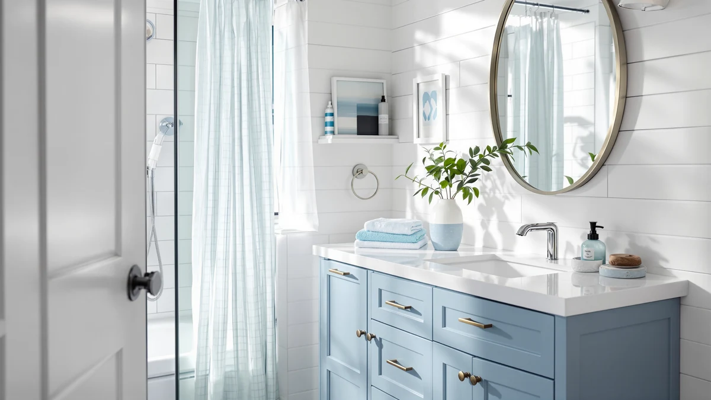

Best Bathroom Vanity Colors (2026)
Prices and picks verified as of September 2026. Independent, reader-supported reviews.


Quick Answer
For most bathrooms, a warm wood-tone vanity color like walnut or natural oak hides everyday water spots and fingerprints better than white, while matte black delivers the boldest contrast and true white keeps a small or dark bathroom feeling brighter. We compared seven vanities across these three color families on finish durability, price, and verified owner reviews.
Our pick: DELUXE LIVING 30 Inch Bathroom, $237.49 Check Price on Amazon
Bottom line: our top pick is the DELUXE LIVING 30 Inch Bathroom Vanity with Sink at $237.49. The best budget option is the Yaheetech 24.5 Inch Modern Bathroom Vanity with Ceramic Basin at $149.99.
Things to Know Before You Buy
- White vanities show water spots and toothpaste flecks fastest. Plan on wiping the cabinet every few days if you want it to keep looking new.
- Wood-tone finishes like walnut and oak hide daily grime best. Confirm the finish is a sealed laminate or veneer rather than raw wood, or it can swell near the sink.
- Matte black hides fingerprints better than any other vanity color, but it shows hard-water spots and dried soap residue more visibly than a wood-tone finish.
- Hardware color matters as much as cabinet color. Gold and brass pair with warm wood tones; black and brushed nickel pair with white and matte black cabinets.
- Floating vanities visually lighten any color. The matte black and light-oak floating picks in this guide read less heavy than their leg-standing counterparts in the same finish.
The best bathroom vanity colors fall into three camps: white, natural wood tone, and matte black, and picking the wrong one is an expensive mistake to undo once the cabinet is plumbed in. A white vanity brightens a small or windowless bathroom, but it shows water spots and toothpaste flecks within a week. A walnut or oak finish hides daily grime and warms up a cold-tiled room, though it can look dated next to bright white tile. Matte black gives you the sharpest contrast against a light bathroom and hides fingerprints better than any other finish here, but it shows dust and hard-water film if you skip a weekly wipe-down.
We compared seven vanities across these three color families, from a $199 white shaker cabinet to a $1,090 quartz-topped white vanity with solid wood construction. Our pick for most bathrooms is the DELUXE LIVING 30 Inch Bathroom in a walnut-brown finish, because it hides the water spots and shoe scuffs that show up instantly on white cabinetry, and it stays under $250 with a usable open shelf for towels.
If you want a specific color story instead of one overall pick, we also break down three white vanities at different price points, two light-oak options with different footprints, and one matte black floating vanity for bathrooms that want more contrast. Match the color to your lighting first: a bathroom with little natural light reads better in white or light oak, while a sunny bathroom can carry black or dark walnut without feeling closed in. Across all three families, the DELUXE LIVING 30 Inch Bathroom remains our top pick for the best bathroom vanity colors compared here, with the Yaheetech, LIKIMIO, and ARIEL Cambridge covering white and the T4TREAM, AmbroVania, and SUNTAGE covering lighter wood tones and black.
Why You Should Trust Us
Ilane Tall leads product research for Best Bathroom Vanities, and spends each week comparing new vanity listings against verified owner reviews, manufacturer spec sheets, and current Amazon pricing. We do not run a fake testing lab, and we do not claim to have installed every vanity in this guide. Instead we compare finish descriptions, verified customer photos, dimensions, and what real buyers report after months of daily use, so every vanity color and finish claim here traces back to a documented source rather than a marketing blurb.
How We Picked
We started with the full bathroom vanity catalog on Amazon and narrowed it down using four filters: a documented color option in white, wood tone, or matte black; a stated cabinet material instead of a photo label alone; at least one verified customer photo confirming the true color; and a review count high enough to catch complaints about finish durability or a color mismatch with listing photos. We dropped vanities with no verified reviews, inconsistent stock photos, or unclear cabinet material, even when the listed color looked promising.
How We Compared
For each finish, we checked the manufacturer's stated material against verified owner photos to confirm the color matches what ships, since some vanity listings show a showroom sample in a different finish than the stock item. We checked hardware color against cabinet color for contrast or clash, cross-referenced price against comparable vanities in the same finish family, and read verified reviews specifically for complaints about scratching, fading, or a color that looked different in person than in photos.
Our Picks

DELUXE LIVING 30 Inch Bathroom
What we like
- Walnut-brown finish hides water spots and toothpaste flecks that show instantly on white cabinets
- Brass hardware and an open lower shelf give it a furniture-like look for $237.49
- Two drawers plus the open shelf add more storage than most vanities under $250
Flaws but not dealbreakers
- The open shelf collects dust if you store towels there long-term without rotating them
- At 30 inches, the single-basin sink is tight for two people sharing a morning routine
| Material | MDF / engineered wood |
| Size | 30 inch |
The DELUXE LIVING 30 Inch Bathroom is our pick for most people shopping the best bathroom vanity colors, because the walnut-brown finish does double duty. It reads as a deliberate design choice next to white subway tile, and it hides the daily mess, water spots, dried toothpaste, hairspray overspray, that shows up almost immediately on white or light-colored cabinetry. Reviewers consistently note the finish looks more expensive than the $237.49 price suggests, and the brass drawer pulls add contrast without competing with the wood tone.
The two-drawer cabinet sits over an open lower shelf, which works for rolled towels or a woven basket but will show dust if you leave it empty for weeks at a time. Owners report the white ceramic sink top holds up well against hard water, and the farmhouse styling pairs with both matte black and brass fixtures, so you are not locked into one hardware finish if you change fixtures later. At 30 inches wide, it fits a standard single-sink footprint without crowding a small bathroom.

Yaheetech 24.5 Inch Modern Bathroom
What we like
- Matte white finish with black hardware reads modern instead of stark
- 24.5-inch footprint fits powder rooms and small primary bathrooms where a 30-inch vanity will not
- 252 verified reviews average 4.4 out of 5, the largest review base of any vanity in this guide
Flaws but not dealbreakers
- White cabinets this size show water spots fast in a household with kids
- A single bottom drawer limits storage compared with vanities that carry two or three drawers
| Material | MDF / engineered wood |
| Size | 24.5 inch |
The Yaheetech 24.5 Inch Modern Bathroom is the white pick in this guide for anyone working with a small footprint. The finish sits closer to a soft matte white than a stark bright white, which helps hide minor scuffs, and the black cabinet hardware and undermount ceramic basin keep the look from feeling flat. With 252 verified reviews and a 4.4-star average, it has the deepest review history of any vanity here, which matters when you are trying to confirm a listed color actually matches what ships.
At 24.5 inches wide, it slots into bathrooms where a standard 30-inch vanity will not fit, without shrinking the sink basin to a size that feels cramped. The tradeoff for the compact footprint is a single bottom drawer instead of the double or triple drawer stacks you get on the 30-inch and 36-inch vanities in this guide. Owners report the white finish wipes clean easily, but like every white vanity color in this guide, it needs more frequent wiping than a wood-tone or black cabinet to stay looking new.

LIKIMIO 30 Inch Bathroom Vanity
What we like
- Fluted corner columns and turned, adjustable solid wood legs give it a furniture look rare below $300
- Black knobs and a built-in towel holder add function without breaking the white color scheme
- Three side drawers plus a door cabinet split storage between open and closed space
Flaws but not dealbreakers
- Only one verified review at the time of writing, so long-term finish durability is not well documented yet
- The traditional styling can clash with a modern white subway or large-format tile bathroom
| Material | MDF / engineered wood |
| Size | 30 inch |
The LIKIMIO 30 Inch Bathroom Vanity is the traditional-styled option among the best bathroom vanity colors in white. Where the Yaheetech and ARIEL Cambridge picks use flat-panel shaker doors, LIKIMIO adds fluted corner columns and turned, adjustable solid wood legs that lift the cabinet off the floor, a detail that reads closer to a furniture piece than a built-in cabinet. Black knobs break up the white surface without introducing a second bright color, and a side-mounted towel holder is molded into the design instead of added as an afterthought.
Storage splits between a two-door cabinet on the left and three stacked drawers on the right, which suits a household that wants both hidden and quick-access storage in the same footprint. The main gap in the listing right now is review depth. With only one verified review at the time of writing, we could not confirm long-term finish wear the way we could for the Yaheetech, which has 252 reviews. If a documented track record matters to you as much as the look, treat this as a design-forward option to watch rather than the safest white pick in the group.

ARIEL Cambridge 36-inch Bathroom Vanity
What we like
- Quartz countertop resists staining and etching better than the ceramic or marble tops on every other pick here
- Solid wood construction and five dovetail drawers signal furniture-grade build quality
- A 4.8-star average across 77 verified reviews is the highest rating of any vanity in this guide
Flaws but not dealbreakers
- At $1,090, it costs more than four times the Yaheetech and SUNTAGE picks
- 36 inches needs real floor space, so it will not fit the small bathrooms the Yaheetech and SUNTAGE are built for
| Material | MDF / engineered wood |
| Size | 36 inch |
The ARIEL Cambridge 36-inch Bathroom Vanity is the premium end of the white category among the best bathroom vanity colors, and the price reflects it. Where the Yaheetech and LIKIMIO use engineered wood cabinets, ARIEL builds the Cambridge from solid wood with five dovetail drawers, joinery you would expect on furniture rather than a bathroom fixture. The quartz countertop is the practical upgrade over the ceramic and marble tops used elsewhere in this guide: quartz resists etching from toothpaste and mouthwash better than either material, which matters most on a bright white surface where every stain shows.
Reviewers consistently cite the brushed nickel hardware and the weight of the drawers as signs of build quality that holds up to the $1,090 price, and the 4.8-star average across 77 verified reviews is the strongest rating in this comparison. The catch is footprint and cost. At 36 inches, it needs a dedicated wall run that the compact Yaheetech and SUNTAGE vanities do not, and it costs more than four of the other six picks combined. For a primary bathroom you plan to keep for a decade, owners report the extra cost buys a finish and countertop that age better than budget white alternatives.

T4TREAM 36 Inch Bathroom Vanity
What we like
- Light natural oak finish is the lightest wood tone in this guide, closer to Scandinavian than farmhouse
- Full-width vertical fluting adds visual interest without adding a second color
- Brass hardware and a 5-star average across six verified reviews echo the DELUXE LIVING pick's warm-tone pairing
Flaws but not dealbreakers
- Only six verified reviews, a small sample size relative to the Yaheetech's 252
- Fluted grooves need a brush or vacuum attachment to clean fully, unlike the flat panels on the white picks
| Material | MDF / engineered wood |
| Size | 36 inch |
The T4TREAM 36 Inch Bathroom Vanity covers the lightest wood tone in this guide. Where the DELUXE LIVING pick leans into a deep walnut-brown, T4TREAM uses a light natural oak that reads closer to Scandinavian or Japandi styling than traditional farmhouse. The full-width vertical fluting is the standout design element, and it works as more than decoration: it breaks up a large 36-inch cabinet front so the vanity does not read as one flat slab of wood.
Brass hardware continues the warm-tone pairing that worked well on the DELUXE LIVING pick, and reviewers report the fluted texture photographs and looks better in person than flat oak-finish alternatives. The tradeoff for the detailed surface is upkeep: grooves collect dust and hair in a way flat panels do not, so plan on a brush attachment during regular cleaning. The review base is thinner than most picks in this guide, six verified reviews at a 5-star average, so treat the rating as an early positive signal rather than the large-sample guarantee you get with the 252-review Yaheetech.

AmbroVania 24-Inch Modern Floating Bathroom
What we like
- Floating wall-mount design leaves the floor visible, which makes a warm wood tone feel lighter than the same color on a floor-standing cabinet
- Marble top and ultra-thin ceramic basin add a premium detail at less than half the ARIEL Cambridge's price
- A 4.7-star average across 96 verified reviews is the second-highest rating in this guide
Flaws but not dealbreakers
- Floating vanities need blocking inside the wall for a secure mount, an extra step during installation
- 24 inches limits it to a single small basin, not a fit for a shared primary bathroom
| Material | MDF / engineered wood |
| Size | 24 inch |
The AmbroVania 24-Inch Modern Floating Bathroom pairs a warm oak wood tone with a wall-mounted, legless design, which changes how the color reads compared with the DELUXE LIVING and T4TREAM picks. Because the cabinet floats and the floor stays visible underneath, the same warm wood tone feels lighter and less bulky in a small bathroom than it would on a floor-standing cabinet of the same width. The marble top and ultra-thin ceramic basin push the finish detail closer to the ARIEL Cambridge's premium tier, but at $483.99, less than half that price.
Owners report the fluted cabinet front hides water spots and fingerprints well, consistent with what we found on the other wood-tone picks in this guide, and the 4.7-star average across 96 verified reviews backs up the finish quality claims. The main planning consideration is installation: a floating vanity needs blocking inside the wall to support the weight securely, a step a floor-standing vanity like the DELUXE LIVING skips entirely. At 24 inches, it suits a single user in a small bathroom rather than a shared double-sink layout.

SUNTAGE 24 Inches Modern MDF
What we like
- Matte black is the only true black finish in this guide, and it hides fingerprints and daily grime better than white or light wood
- Floating wall-mount design plus a 24-inch footprint suits a small bathroom that wants a bold color statement
- A white sink top creates contrast against the black cabinet instead of matching it, which reads more intentional than an all-black build
Flaws but not dealbreakers
- At 4.1 stars across 67 reviews, it has the lowest average rating of the seven vanities in this guide
- Matte black shows hard-water spots and soap residue more visibly than a wood-tone finish, even though it hides fingerprints well
| Material | MDF / engineered wood |
| Size | 24 inch |
The SUNTAGE 24 Inches Modern MDF vanity is the matte black pick among the best bathroom vanity colors in this guide, and it is the boldest color choice of the seven. Vertical fluted drawer fronts in matte black pair with black hardware and a white ceramic sink top, so the top surface provides contrast instead of blending into the cabinet the way an all-black build would. Reviewers consistently note the matte finish hides fingerprints and daily smudges noticeably better than the glossy black finishes sold on competing vanities.
Like the AmbroVania, it floats on the wall rather than standing on legs, and the 24-inch width targets the same small-bathroom use case. The finish does carry a real tradeoff: matte black shows hard-water spots and dried soap residue more visibly than the wood-tone picks in this guide, even though it hides fingerprints well. At a 4.1-star average across 67 verified reviews, it also carries the lowest rating of the seven vanities compared here, worth weighing against the AmbroVania's 4.7-star average if color boldness and rating consistency both matter to you.
Quick Comparison
The table below lines up all seven bathroom vanity colors and finishes from this guide by material, price, and rating.
| Product | Material | Price | Rating | Best for | Get it |
|---|---|---|---|---|---|
| DELUXE LIVING 30 Inch Bathroom | MDF / engineered wood | $237.49 | 4.4 | Warm wood tone on a budget | View on Amazon → |
| Yaheetech 24.5 Inch Modern Bathroom | MDF / engineered wood | $199.99 | 4.4 | Small white vanity for tight spaces | View on Amazon → |
| LIKIMIO 30 Inch Bathroom Vanity | MDF / engineered wood | $279.99 | 5 | Traditional white with turned legs | View on Amazon → |
| ARIEL Cambridge 36-inch Bathroom Vanity | MDF / engineered wood | $1,090.00 | 4.8 | Premium white with quartz top | View on Amazon → |
| T4TREAM 36 Inch Bathroom Vanity | MDF / engineered wood | $359.99 | 5 | Light natural oak with fluted texture | View on Amazon → |
| AmbroVania 24-Inch Modern Floating Bathroom | MDF / engineered wood | $483.99 | 4.7 | Warm wood tone, floating design | View on Amazon → |
| SUNTAGE 24 Inches Modern MDF | MDF / engineered wood | $199.49 | 4.1 | Matte black, boldest contrast | View on Amazon → |
What is the most popular bathroom vanity color?
White remains the most common bathroom vanity color because it works with almost any tile or wall color and makes a small bathroom feel larger.
Do dark bathroom vanities show more dirt than white ones?
Dark and wood-tone vanities generally hide daily grime, water spots, and fingerprints better than white ones, based on what owners report in verified reviews.
The Competition
We also considered other vanity colors and finishes that did not make the final seven picks.